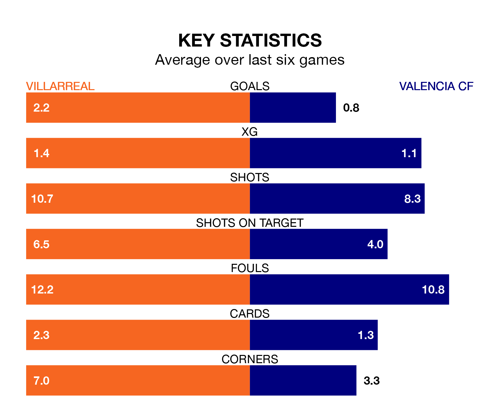

Villarreal host Valencia CF at Estadio de la Cerámica on Sunday on the back of three consecutive wins in La Liga.
Villarreal have picked up 12 points from their last six games, and they face a Valencia side who also won their last match, and have collected eight points from the last possible 18.
With 46 goals in 28 games so far this season, Villarreal are scoring more than average in the league with 1.6 goals per game. But they are conceding more than average too, letting in 51 goals at a rate of 1.8 per game.
Valencia, meanwhile, are below average scorers, with 1.2 goals per game, compared to a league average of 1.3. They have conceded 1.1 goals per game.
In the last 10 years, Villarreal and Valencia have played each other on 22 occasions. Villarreal won nine of them, Valencia 10, and they drew three times.
On average, Villarreal scored 1.0 goals and Valencia 1.3 in those matches.
Their last meeting was on January 2, when Valencia won 3-1 at home.
The hosts' Álex Baena is the league's most creative player, racking up nine assists in 25 appearances so far this season.
For the away side, Diego López has set up the most goals, having laid on five assists in 25 games.
Valencia are eighth in the table after 27 games, of which they have won 11 and drawn seven, earning 40 points.
Villarreal are three places behind Valencia in 11th, with nine wins and eight draws putting them on 35 points.
Villarreal's last match was on Sunday, a 3-2 win against Real Betis, with Alexander Sørloth, Baena Rodríguez and Sokratis Papastathopoulos (own goal) getting the goals for Villarreal.
Valencia beat Getafe CF 1-0 last time out, on March 9, with Hugo Duro on the scoresheet.
Updated: 15:10 (UTC), 15/03/24